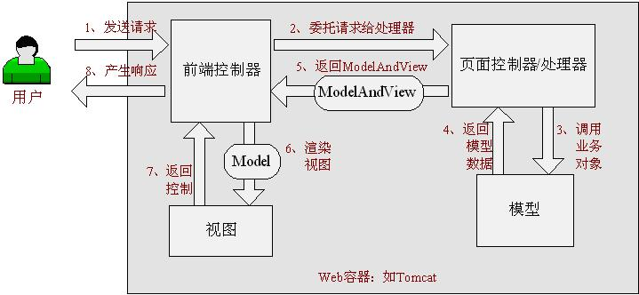

Spring Web MVC是什么
Spring Web MVC是一种基于Java的实现了Web MVC设计模式的请求驱动类型的轻量级Web框架，即使用了MVC架构模式的思想，将web层进行职责解耦，基于请求驱动指的就是使用请求-响应模型，框架的目的就是帮助我们简化开发，Spring Web MVC也是要简化我们日常Web开发的。
另外还有一种基于组件的、事件驱动的Web框架在此就不介绍了，如Tapestry、JSF等。
Spring Web MVC也是服务到工作者模式的实现，但进行可优化。前端控制器是DispatcherServlet；应用控制器其实拆为处理器映射器(Handler Mapping)进行处理器管理和视图解析器(View Resolver)进行视图管理；页面控制器/动作/处理器为Controller接口（仅包含ModelAndView handleRequest(request, response) 方法）的实现（也可以是任何的POJO类）；支持本地化（Locale）解析、主题（Theme）解析及文件上传等；提供了非常灵活的数据验证、格式化和数据绑定机制；提供了强大的约定大于配置（惯例优先原则）的契约式编程支持。
Spring Web MVC能帮我们做什么
- 让我们能非常简单的设计出干净的Web层和薄薄的Web层；
- 进行更简洁的Web层的开发；
- 天生与Spring框架集成（如IoC容器、AOP等）；
- 提供强大的约定大于配置的契约式编程支持；
- 能简单的进行Web层的单元测试；
- 支持灵活的URL到页面控制器的映射；
- 非常容易与其他视图技术集成，如Velocity、FreeMarker等等，因为模型数据不放在特定的API里，而是放在一个Model里（Map数据结构实现，因此很容易被其他框架使用）；
- 非常灵活的数据验证、格式化和数据绑定机制，能使用任何对象进行数据绑定，不必实现特定框架的API；
- 提供一套强大的JSP标签库，简化JSP开发；
- 支持灵活的本地化、主题等解析；
- 更加简单的异常处理；
- 对静态资源的支持；
- 支持Restful风格。
Spring Web MVC架构
Spring Web MVC框架也是一个基于请求驱动的Web框架，并且也使用了前端控制器模式来进行设计，再根据请求映射规则分发给相应的页面控制器（动作/处理器）进行处理。首先让我们整体看一下Spring Web MVC处理请求的流程：

图2-1
具体执行步骤如下：
1、 首先用户发送请求————>前端控制器，前端控制器根据请求信息（如URL）来决定选择哪一个页面控制器进行处理并把请求委托给它，即以前的控制器的控制逻辑部分；图2-1中的1、2步骤；
2、 页面控制器接收到请求后，进行功能处理，首先需要收集和绑定请求参数到一个对象，这个对象在Spring Web MVC中叫命令对象，并进行验证，然后将命令对象委托给业务对象进行处理；处理完毕后返回一个ModelAndView（模型数据和逻辑视图名）；图2-1中的3、4、5步骤；
3、 前端控制器收回控制权，然后根据返回的逻辑视图名，选择相应的视图进行渲染，并把模型数据传入以便视图渲染；图2-1中的步骤6、7；
4、 前端控制器再次收回控制权，将响应返回给用户，图2-1中的步骤8；至此整个结束。